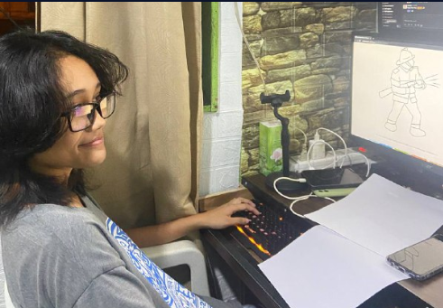

Hello, I am Grace G. Getungo, a student at Saint Peter's College, currently studying Computer Studies.

Hello, I'm Grace G. Getungo, a dedicated student currently pursuing a degree in Information Technology. With over a year and a half of experience in the field, I have developed foundational skills in programming languages such as Java, HTML, and CSS. While I'm continuously expanding my expertise, I am passionate about learning and exploring new technologies in IT.
Beyond academics, I enjoy playing computer games, reading manhwa, watching movies, and engaging in sports like basketball, which help fuel my creativity and problem-solving skills.